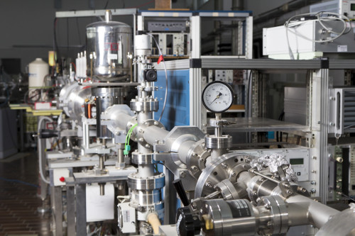

LTS's Research and Development facility is a fully fledged analytical and developmental laboratory, conducting a broadly-based multidisciplinary program focusing on the production and application of new materials, as well as advancing production techniques for existing materials. Our US and global manufacturing network and partnerships are capable to melt, synthesizes, purify, machine, bond, and deposit various materials. With custom manufacturing capabilities backed by advanced material characterization, the LTS aim at supplying specialized items meeting or exceeding our customer’s requirements.
To deliver on custom formulations, small-scale production, and provide top-level quality control of products the LTS has established the R&D Lab in Orangeburg, NY. The lab is led by Ph.D. level scientists and is equipped with XPert Pro MPD Diffractometer, XRF, particle size, polarized optical microscope, atomic absorption spectrometer, several furnaces, ball-mill, sieve, and press machines, glove box, as well as complete wet chemistry lab capabilities.
We start by having comprehensive scientific discussion with our customers. Usually, deposited films have quite different physical, optical, or mechanical properties than the targets and pellets from which there are deposited. LTS contributes by adjusting:
Synthesis (chemical composition, level of dopants, powder homogenization, gases flow, etc)
Processing (annealing conditions, texturing, grinding or machining).
Providing detailed characterization (please refer to Analytical Services) and promptly sharing the results with our clients.
Soliciting feedback on the deposited material properties, then
Adjusting our synthesis and processing protocols.
Several R&D cycles are in order to deliver on new formulations.
Some of our milestone product introductions to the industry include:
1997: Developed the DFM® (Direct Fluorination Method) to produce highly pure fluoride compounds that undergo cleaner deposition for optical coatings.
2003: Creation of YBC Fluorides, several specialized fluoride compounds made with DFM using rare earth fluorides doped with hafnium, named YBC 375, 905, and 907. These can substitute for and even surpass radioactive Thorium Fluoride (ThF4) which can be used for high power CO2 lasers.
2006: Several new Transparent Conductive Oxides (TCOs) to the solar and photovoltaic industries. Materials such as Indium gallium zinc oxide (IGZO), Gallium zinc oxide (GZO), and Zinc tin oxide (ZTO) are deposited in layers as components for the newest generation thin film displays.
2008: A modified form of Inconel (Ni/Cr/Fe) used in extreme conditions for aerospace and automotive applications.
2011-12: New Piezoelectric Perovskite materials such as PNZT, PLZT, and PMN-PT for ferroelecric film and MEMS. more info
2013: Materials for absorbing Thermal Shock in rockets comprised of Hafnium yttrium oxide and Hafnium cerium oxide.
2014: Chalcogenide Glasses - Semiconducting covalent network solids with interesting properties suitable for optical and memory applications.
At LTS we are devoted to meeting our customers' needs, delivering the highest quality materials at very competitive prices, tailored to customers' specification. Our knowledgeable staff provide unsurpassed level of service. We welcome your inquiries and look forward to working with you!
Where quality is concerned, LTS is at the cutting edge of the industry.
Research and development of transparent ceramic Ver. 1.1 -05-09-2019
SPECIALTY SPHERICAL POWDERS (Click to view)Capability and product portfolio of thermal spray compounds